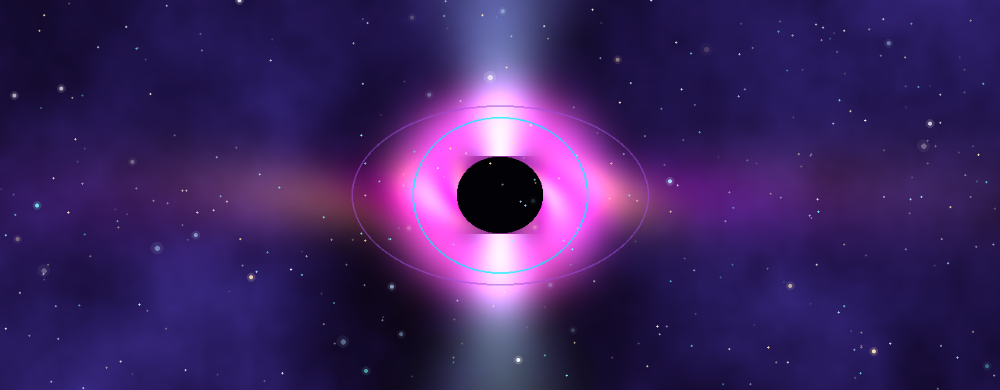
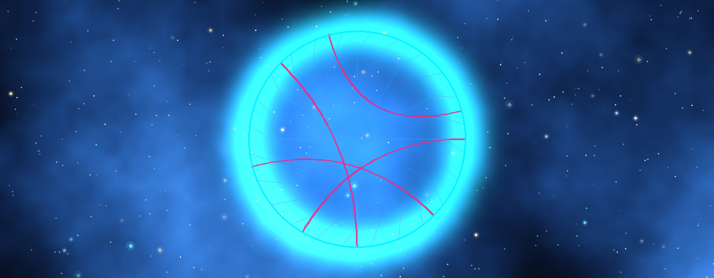
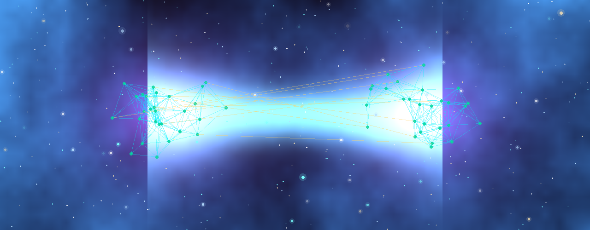

Evren Neyden Oluşuyor?
Maddeden Enerjiye, Enerjiden Yazılıma
İnsanlığın 2600 yıllık varoluş sorgusu: Thales'in suyundan Demokritos'un atomuna, Einstein'ın $E=mc^2$ enerjisinden Wheeler'ın 'It from Bit' enformasyonuna ve kuantum simülasyon evrenine interaktif yolculuk.
"Kozmos içimizdedir. Bizler yıldız tozundan yapıldık. Biz, evrenin kendini bilmesinin bir yoluyuz."
— Carl Sagan
Fikirlerin ve Teorilerin Evrimi

İnteraktif Fizik & Enformasyon Laboratuvarı (10 Lab)
Farklı tarihsel modelleri, kuantum olgularını, kara delik termodinamiğini ve dijital evren tezlerini 10 canlı simülatör üzerinden deneyimleyin.
Parçacık ve Atom Modelleri Simülatörü
Demokritos'un katı küresinden Bohr yörüngelerine ve Schrödinger olasılık bulutuna geçiş.

Madde vs Enerji vs Bilgi
Gerçekliğin üç temel paradigmasının ontolojik, matematiksel ve fiziksel karşılaştırması.
| Boyut / Özellik | 1. Madde Paradigması | 2. Enerji & Alan Paradigması | 3. Bilgi Paradigması (It from Bit) |
|---|

Kozmik ve Kuantum Kavram Sözlüğü
Antik felsefeden kuantum alan teorisine, holografik ilkeden simülasyon argümanına kritik terimler.

Teori ve Makale Kütüphanesi
Depo içerisinde yer alan 6 kapsamlı araştırma belgesini ve kuramsal makaleyi incelemek için kartlara tıklayın.



Kozmik Enformasyon Testi (15 Soru)
Maddeden Yazılıma uzanan 2600 yıllık serüvendeki 15 kritik kavramı test edin.